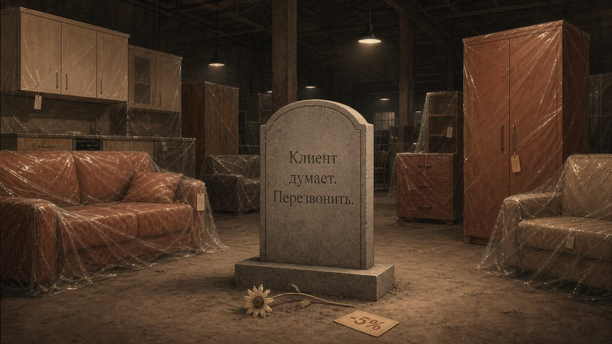
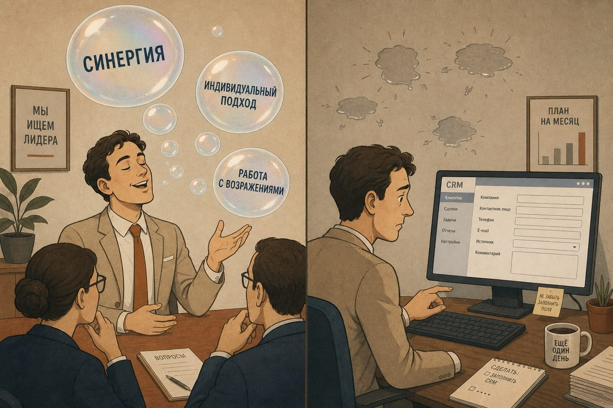

Есть один неприятный, но очень полезный способ проверить человека в мебельном бизнесе. Не надо сразу сажать его напротив себя, наливать кофе и спрашивать про опыт продаж, мотивацию, стрессоустойчивость и любимую книгу по саморазвитию, которую он, конечно, не читал, но видел в рилсах. Лучше дайте ему реальную рабочую ситуацию из вашей компании и попросите письменно объяснить, что он понял, что собирается делать и что напишет клиенту, коллеге или руководителю.
Вот тут начинается самое интересное.
Говорить красиво научились почти все. Особенно те, кто часто ходил на собеседования, проходил тренинги продаж, слушал вебинары про личный бренд и однажды произнёс фразу «я не продаю мебель, я продаю эмоцию». После этой фразы, по-хорошему, нужно вызывать не HR, а санитаров, но мы люди терпимые и всё ещё надеемся, что человеку просто не повезло с тренером.

На собеседовании кандидат может быть бодрым, обаятельным, уверенным, энергичным и даже слегка опасным для бюджета компании, потому что его хочется взять немедленно. Он смотрит в глаза, говорит правильные слова, кивает в нужных местах, рассказывает, как на прошлом месте «поднял продажи», «выстроил коммуникацию», «работал с возражениями» и «не боялся сложных клиентов». А потом он выходит на работу, получает первого реального клиента, который хочет кухню как на картинке, только дешевле, быстрее, с гарантией, без предоплаты, с бесплатным замером и припиской «вы пока примерно посчитайте, а мы подумаем». И вся эта красивая уверенность вдруг превращается в одну строчку в CRM:
Клиент думает. Перезвонить.
Это не запись, а надгробие сделки, причём на надгробии даже дата смерти не указана.
Устная обаятельность сегодня резко дешевеет
Долгие годы многое можно было компенсировать количеством входящих обращений. Один клиент потерялся, второй пришёл; один продавец недожал, другой случайно попал в настроение клиента; один дизайнер забыл отправить КП, зато в салон зашла семейная пара, которая уже три месяца выбирала шкаф и наконец устала выбирать. На растущем рынке компания могла быть не очень умной, не очень точной, не очень системной и всё равно жить. Примерно как человек, который питается булками, спит по пять часов, не ходит к врачу и до сорока лет считает, что у него крепкое здоровье. Потом организм, конечно, присылает счёт, который обычно без скидки.
Сейчас всё устроено иначе. Покупатель стал осторожнее, деньги дороже, решение откладывается дольше, а сравнение с маркетплейсами, частниками и соседним салоном превратилось в национальный вид спорта. Мебельная компания уже не может позволить себе роскошь неясности. Каждый потерянный контакт стал заметнее, каждое неотправленное сообщение стоит дороже, а каждое плохо написанное коммерческое предложение превращается не в безобидное «ну не купили», а в доказательство того, что клиенту просто не помогли принять решение. Каждая пустая запись в CRM означает, что компания не знает, почему клиент не купил, где у него был страх, кто принимал решение в семье, что ему обещали и почему он ушёл к конкуренту.
И вот здесь выясняется простая вещь: мебельной компании сегодня нужны не только люди, которые умеют говорить, а нужны прежде всего те, которые умеют писать. Причём не просто грамотно: грамотность это хорошо, но это ещё не мышление, и запятая перед «что» не спасёт сделку, если человек не понял, что вообще происходит. Нужны люди, которые умеют письменно думать.
Письмо показывает мышление лучше, чем разговор
Разговор часто обманывает. В разговоре можно взять темпом, харизмой, интонацией, уверенностью, профессиональными словами, выражением лица и даже удачной паузой; можно сделать вид, что понял; можно сказать «да, конечно, всё сделаем», бодро кивнуть на совещании, а потом выйти и тихо спросить у коллеги: «А что он, собственно, имел в виду?»
В письме спрятаться труднее. Когда человек пишет, сразу видно, понял он задачу или нет, где у него факты, а где предположения, где эмоции, где план, а где обычный текстовый дым. Видно, умеет ли он отделить главное от второстепенного, способен ли сформулировать следующий шаг, думает ли он о читателе или только о себе.
В мебели это критически важно, потому что мебельная продажа почти никогда не бывает одномоментной. Особенно если речь не о табуретке, которую можно унести под мышкой, а о кухне, шкафе, гардеробной, детской, спальне, диване на заказ, проектной мебели или комплексном решении для квартиры. Там длинный путь: клиент увидел рекламу, оставил заявку, получил первый ответ, задал вопросы, прислал размеры, получил примерный расчёт, приехал в салон или ждёт замерщика, обсудил материалы, испугался цены, показал супруге, сравнил с конкурентами, нашёл похожую картинку дешевле, попросил скидку, ушёл думать, вернулся через неделю, снова попросил пересчитать, а потом начались замер, проект, договор, производство, доставка, монтаж и, если компании особенно повезло, рекламация.
На каждом этапе кто-то должен что-то объяснить. И чаще всего уже не устно, а письменно: в мессенджере, письме, CRM, задаче, комментарии к проекту, отчёте, КП, инструкции, претензии, ответе на отзыв. Если сотрудники не умеют писать, компания начинает терять смысл между этапами. Клиент сказал одно, продавец понял другое, дизайнер нарисовал третье, технолог увидел четвёртое, производство сделало пятое, монтажник приехал на шестое, а собственник потом долго и задумчиво спрашивает: «Как это вообще произошло?» Произошло обычно очень просто: никто ничего нормально не написал.
CRM это не кладбище лидов
В мебельных компаниях CRM часто воспринимается как система, куда продавцов заставляют что-то заносить, чтобы руководитель мог изображать контроль. Поэтому продавцы относятся к ней примерно как школьник к дневнику: если можно не показывать, лучше не показывать. В результате CRM заполняется загадочными археологическими надписями вида «думает», «дорого», «перезвонить», «не отвечает», «сказал позже», «ждёт мужа». Последняя запись особенно прекрасна: создаётся ощущение, что клиент не мебель выбирает, а участвует в древнем семейном ритуале, где решение принимает только муж, но сам муж появляется в кадре не раньше третьего акта.
Проблема, разумеется, не в CRM. Проблема в том, что компания не научила людей фиксировать смысл. Хорошая запись отвечает хотя бы на несколько простых вопросов: кто клиент, что он хочет купить, зачем ему это нужно, какой у него бюджет или ценовой ориентир, что для него важно, чего он боится, с кем сравнивает, кто принимает решение, что ему уже обещали, какой следующий шаг и когда именно его делать.
Сравните типовую запись с нормальной:
Клиент выбирает кухню в квартиру после ремонта, срок установки желателен до конца месяца, но точной даты нет. Бюджет ожидал 350–400 тыс., наш расчёт предварительно выходит 520 тыс. Главный страх - переплатить за «то же самое», что предлагают дешевле. Сравнивает с двумя салонами и кухнями на маркетплейсе. Решение принимает вместе с супругой: ей важнее внешний вид, ему цена и сроки. Отправил два варианта (базовый за 470 тыс. и оптимальный за 520 тыс.). Следующий шаг делает в четверг в 12:00 созвон, обсудить разницу по материалам, фурнитуре и гарантии.
Это уже не запись, а управленческий актив. По ней другой продавец сможет подхватить клиента, руководитель поймёт, где узкое место, маркетолог увидит, с чем сравнивают, а собственник увидит, что проблема не обязательно в цене, а в том, как компания вообще объясняет ценность. Тогда как запись «дорого» не объясняет ровным счётом ничего: «дорого» это не причина, а надпись на двери, за которой обычно сидят страх, недоверие, непонимание, отсутствие бюджета, отсутствие срочности, слабая презентация ценности или просто конкурент, который быстрее ответил.
В мебели продаёт не тот, кто говорит больше, а тот, кто снимает страх
Покупка мебели для клиента часто неприятнее, чем мебельщики привыкли думать. Для компании это обычная продажа, а для клиента это риск. Он боится ошибиться с размером, боится, что цвет в салоне будет одним, а дома другим, что кухню привезут позже, чем обещали, что монтажники испортят стены, что фасады начнут провисать через полгода. Боится, что ему навяжут лишнее, что после оплаты компания начнёт разговаривать с ним уже другим голосом, и что за «индивидуальное решение» он переплатит, а получит обычный шкаф, только с более торжественным описанием.

Этот страх невозможно снять красивой речью на собеседовании. Его не снимешь даже фразой «у нас индивидуальный подход»: клиент слышал её уже тысячу раз, причём чаще всего от тех, у кого подход оказался настолько индивидуальным, что его потом никто не смог найти. Страх снимается ясностью, а ясность в длинной продаже почти всегда создаётся текстом.
Текстом объясняется, что входит в цену и что в неё не входит; какие есть варианты и чем именно они отличаются; где можно сэкономить без риска и где экономить нельзя; что будет после замера, когда будет проект, как вносить изменения; что будет, если стены окажутся кривыми, клиент передумает, срок сдвинется или что-то приедет с браком. Хороший продавец мебели сегодня это не человек, который умеет «закрывать на сделку» голосом тренера из 2007 года, а человек, который умеет провести клиента через неопределённость. А неопределённость лучше всего побеждается не давлением, а структурой.
Почему собеседование стоит заменить письменным кейсом
Собеседование, конечно, не нужно отменять полностью. Люди всё-таки не шкафы, хотя некоторые кандидаты стараются доказать обратное :-) . Но устного собеседования недостаточно. Если вы нанимаете продавца, дизайнера, руководителя салона, замерщика, технолога, маркетолога, специалиста по рекламациям или операционного менеджера, дайте ему письменный кейс. Не абстрактный тест на грамотность и не школьное сочинение на тему «Почему я хочу работать в вашей динамично развивающейся компании»; за такие тексты надо не брать на работу, а аккуратно выводить из здания.
Дайте реальную ситуацию из вашего бизнеса. Например, для продавца:
Клиент прислал фото кухни из Pinterest, написал: «Хотим примерно такую, сколько будет стоить?» Размеров нет, бюджета нет, сроков нет. Напишите ответ клиенту в WhatsApp и укажите, что вы занесёте в CRM после первого контакта.
Для дизайнера:
Клиент просит сделать «красиво и недорого», но при этом выбирает самые дорогие фасады, сложную фурнитуру и нестандартные размеры. Напишите, как вы объясните ему разницу между желаниями, бюджетом и техническими ограничениями.
Для замерщика:
На объекте обнаружены неровные стены, выводы под коммуникации отличаются от проекта, клиент раздражён и говорит, что его «никто не предупреждал». Напишите короткий отчёт руководителю и сообщение клиенту.
Для технолога:
Продавец согласовал с клиентом решение, которое красиво выглядит в проекте, но рискованно в производстве и монтаже. Напишите комментарий в задаче: что именно рискованно, какие есть варианты, какое решение нужно принять до запуска.
Для руководителя салона:
За две недели упало количество замеров. Продавцы говорят, что «лидов мало», маркетолог говорит, что «трафик нормальный», собственник требует объяснений. Напишите короткий отчёт: что проверяете, какие гипотезы, какие действия на ближайшие три дня.
Для специалиста по рекламациям:
Клиент получил шкаф и недоволен зазорами. Он пишет резкое сообщение и угрожает отзывом. Напишите первый ответ клиенту и внутреннюю записку: что нужно проверить.
Такие задания сразу показывают, кто перед вами. Одни начнут писать шаблонные фразы вроде «мы обязательно разберёмся в вашей ситуации, потому что для нас очень важно качество обслуживания клиентов»; это текстовая вата, в ней тепло, но дышать нечем. Другие начнут обвинять клиента, коллег, рынок, поставщиков, погоду, ретроградный Меркурий и предыдущего замерщика. Третьи начнут думать. Именно третьи вам и нужны.
«А если кандидат использует ИИ?»
Это возражение возникает почти сразу. А если человек воспользуется ChatGPT, Claude, GigaChat или ещё каким-нибудь электронным родственником с высшим образованием? И что? Если кандидат с помощью ИИ сумел лучше структурировать мысль, точнее сформулировать ответ, увидеть риск и написать клиенту понятнее, это не недостаток, а рабочий навык. Вопрос не в том, использовал он ИИ или нет, а в том, какую задачу вы ему дали. Если задание можно решить одной красивой нейросетевой болтовнёй, значит, плохое задание дали вы.
Нормальный кейс должен требовать понимания контекста, выбора, приоритизации и здравого смысла. Поэтому не стоит спрашивать: «Напишите красивое письмо клиенту о преимуществах нашей компании». ИИ с удовольствием напишет, и там будет «индивидуальный подход», «высокое качество», «команда профессионалов», «многолетний опыт» и прочий корпоративный компот, после которого клиент окончательно вспомнит, что у него есть дела поважнее. Гораздо честнее спрашивать так:
Клиент сравнивает наш шкаф за 180 тыс. с предложением конкурента за 135 тыс. Он считает, что это «то же самое». У нас в цене другая фурнитура, доставка, монтаж, гарантийное сопровождение и доработка проекта после замера. Напишите короткий ответ клиенту без давления и без обесценивания конкурента. Цель — не выбить согласие любой ценой, а помочь клиенту понять разницу и согласиться на следующий разговор.
Вот тут уже придётся думать. ИИ может помочь, но если человек не понимает продажу, клиента и мебельную специфику, он всё равно выдаст красивую пустоту. А красивая пустота сегодня опаснее грубой ошибки, потому что ошибку хотя бы видно.
Письменные кейсы нужны не только новичкам
Самая неприятная часть этой идеи в том, что письменные задания стоит давать не только кандидатам, но и действующим сотрудникам. У собственника сегодня одна из главных задач это не просто нанять кого-то нового, а понять, что вообще происходит с теми, кто уже работает. Кто реально думает, а кто просто бегает; кто понимает клиента, а кто прячется за словами; кто видит системную проблему, а кто каждый раз сообщает только: «я ему звонил, он не взял трубку». Кто способен объяснить динамику продаж через воронку, этапы, причины отказов, скорость реакции, качество КП и работу с повторным контактом, а кто отвечает «ну сейчас у всех плохо» и считает разговор оконченным.
Фраза «сейчас у всех плохо» иногда вполне верна, но как управленческий инструмент она бесполезна: это всё равно что поставить пациенту диагноз «жизнь» и назначить терпение.
Можно внедрить простой формат письменного разбора. Каждую неделю продавец пишет по трём потерянным сделкам: что хотел клиент, какой был бюджет, с чем сравнивал, на каком этапе ушёл, что мы сделали, чего не сделали, какая вероятная причина потери и что можно изменить. Не эссе, не роман и не исповедь мебельного страдальца, а короткий разбор по делу, но с мыслью. Руководитель салона раз в неделю фиксирует, что изменилось в трафике, конверсии и среднем чеке, где узкое место, какая гипотеза проверяется, что сделано и какой получен результат. Маркетолог пишет, какие лиды пришли, какие дошли до диалога, какие до замера и какие до сделки, по каким каналам хуже качество, какие вопросы чаще задают клиенты и какие страхи у них повторяются. Технолог пишет, какие ошибки чаще приходят из продаж, какие решения чаще вызывают проблемы в производстве, какие требования нужно заранее объяснять клиенту и что стоит изменить в шаблонах КП или чек-листе замера.
И тут внезапно выясняется, что компания начинает думать, и не потому что все стали умнее, а потому что мысль наконец-то начали фиксировать.
Совещания часто нужны только потому, что никто не умеет писать
Мебельные компании любят совещания. Иногда даже кажется, что если продажи упали, надо срочно собрать совещание, чтобы коллективно обсудить, почему продажи упали, после чего разойтись и продолжить делать всё то же самое, но уже с приятным чувством участия в управлении. Совещание само по себе не зло. Зло это совещание, которое заменяет письменную подготовку.

Когда люди приходят на встречу без фактов, без цифр, без гипотез и без короткого письменного вывода, встреча превращается в обмен ощущениями. Один чувствует, что лиды плохие, другой что цены высокие, третий что клиенты странные, четвёртый что виноват маркетолог. Маркетолог в это время чувствует, что его не ценят, а собственник чувствует, что всех нужно разогнать. В результате компания получает не управление, а сеанс групповой метеорологии: все обсуждают атмосферное давление рынка.
Если перед совещанием каждый участник письменно отвечает всего на три вопроса (что произошло, чем это подтверждается и что предлагаю сделать), качество разговора резко меняется. Вместо «клиенты стали хуже» появляется примерно такое:
За последние две недели количество заявок не снизилось, но доля клиентов, дошедших до замера, упала с 34% до 21%. В записях CRM чаще повторяются причины: «дорого» и «пришлите расчёт без замера». Гипотеза: мы слишком рано отправляем цену без объяснения состава решения и теряем доверие. Предлагаю протестировать новый первый ответ и два варианта КП — короткий для первичного контакта и подробный после уточнения размеров.
Вот с этим уже можно работать, а с «клиенты стали хуже» работать нельзя, хотя иногда, конечно, очень хочется.
Письменность это не бюрократия, если она помогает думать
Здесь важно не впасть в другую крайность. Некоторые собственники, услышав идею про письменную коммуникацию, тут же начинают создавать регламенты, формы, таблицы, отчёты, обязательные поля, инструкции, шаблоны и внутренние положения о порядке согласования порядка согласования. Через месяц сотрудники ненавидят уже не только письменность, но и алфавит.
Письменная культура нужна не для того, чтобы компания тонула в документах, а для того, чтобы важное не исчезало. Разница простая: бюрократия это когда человек пишет, чтобы от него отстали, а система это когда человек пишет, чтобы другой мог понять и действовать.
Если отчёт никто не читает, его надо отменить. Если поле в CRM никто не использует для решения, его надо убрать. Если шаблон заставляет человека писать лишнее, его надо сократить. А если документ не помогает клиенту, сотруднику или руководителю принять решение, это не документ, а бумажный памятник тревожности собственника.
Письменность должна быть короткой, полезной и встроенной в работу. Не «напишите отчёт о проделанной работе», а «напишите, какой следующий шаг нужен, чтобы не потерять клиента». Не «заполните все поля», а «зафиксируйте то, без чего следующий человек не сможет продолжить сделку». Не «объясните, почему не продали», а «разберите, на каком этапе клиент ушёл и какую гипотезу проверяем».
Как понять, что человек умеет писать по-деловому
Умение писать в бизнесе это не литературный талант. Не нужно искать в продавце Довлатова, в технологе Чехова, а в руководителе салона Толстого. Хотя если технолог начнёт писать как Толстой, заказ в производство вы, возможно, никогда не запустите, потому что на описание одного угла у него уйдёт три главы.
Деловое письмо проверяется проще. Человек умеет писать, если после его текста понятно: что произошло, что важно, что неизвестно, какой риск, какие есть варианты, что он предлагает и что нужно сделать дальше. Дополнительный критерий ещё лаконичнее: хороший текст уменьшает количество уточняющих вопросов, а плохой их увеличивает.
Если после короткого сообщения сотрудника руководитель вынужден выяснять, какой именно клиент, какой заказ, что он хотел, почему отказался, что ему предложили, когда перезванивать, кто отвечает, где файл и почему вообще об этом узнаём случайно, значит, сотрудник не написал сообщение. Он переложил работу по пониманию на руководителя. Это очень распространённая управленческая болезнь: человек вроде бы сообщил, но сообщил так, что теперь думать должен другой. Плохая письменная коммуникация всегда ворует чужое внимание, а внимание собственника и руководителя сегодня вообще главный дефицитный ресурс.
В мебельной компании имеет смысл проверять четыре вида письма
Первое это письмо клиенту. Сюда относится всё, что уходит наружу: ответы в мессенджерах, письма, КП, комментарии к проекту, объяснения по цене, реакции на претензии и отзывы. Здесь важны ясность, забота, конкретика и отсутствие давления, потому что клиент должен почувствовать, что с ним разговаривает не скрипт, а живой человек, который понимает его задачу.
Второе это письмо в CRM, то есть память сделки. Здесь нужны факты, следующий шаг, контекст, риски и зафиксированные договорённости, чтобы любой другой сотрудник мог подхватить работу без расшифровки.
Третье это письмо коллеге, то есть передача работы между продавцом, дизайнером, замерщиком, технологом, производством, логистикой и монтажом. Здесь особенно важно не прятать неопределённость: если что-то непонятно, нужно прямо так и писать. «Не ясно вот это». Не нужно делать вид, что всё понятно, потому что потом непонятное обычно приезжает к клиенту в виде лишней детали или отсутствующей.
Четвёртое это письмо руководителю. Это управленческий текст: отчёт, проблема, предложение, разбор, гипотеза. Здесь нужно не жаловаться, а помогать принять решение. Если человек хорошо говорит, но во всех четырёх форматах пишет плохо, он может быть приятным собеседником, но при сегодняшнем темпе и сложности продажи этого слишком мало. Компании нужны те, кто оставляет после себя не шум, а ясность.
Как внедрить письменный отбор без революции
Не нужно начинать с большого проекта под названием «Развитие культуры письменного мышления в мебельной компании». Название красивое, но после него обычно хочется лечь. Начните проще.
Возьмите пять реальных ситуаций из своей компании. Не придуманных, а настоящих: потерянная сделка, конфликт на замере, дорогой расчёт, клиент сравнивает с маркетплейсом, рекламация после монтажа. Для каждой ситуации сделайте короткое письменное задание не больше одной страницы. Давайте эти задания кандидатам, не прося «написать красиво», а прося писать так, как они написали бы в реальной работе. Оценивайте по понятным критериям: понял ли ситуацию, увидел ли риск, задал ли правильные вопросы, предложил ли следующий шаг, понятно ли это клиенту или коллеге. А лучшие ответы сохраняйте как внутренние примеры.
Так у компании постепенно появится библиотека хорошей коммуникации, причём не абстрактный регламент, который лежит в папке «Регламенты» и тихо стареет, а живые примеры того, как отвечать клиенту, как фиксировать сделку, как описывать проблему, как передавать заказ и как разбирать отказ.
Что это даёт собственнику
Собственник мебельной компании часто страдает от того, что слишком много смысла проходит через него. Ему звонят, чтобы уточнить; ему пересылают переписки без пояснений; ему говорят «посмотри, пожалуйста, там клиент написал»; ему приносят проблему без вариантов решения и втягивают в каждую спорную ситуацию, потому что никто не умеет нормально сформулировать вопрос. В итоге собственник превращается в центральный процессор компании: все запросы идут через него, он перегревается, иногда начинает шуметь, иногда зависает, но заменить его почему-то нельзя.

Письменная культура снижает нагрузку на собственника, потому что сотрудники начинают приносить не сырой хаос, а подготовленную мысль. Не «у нас проблема с клиентом», а:
Клиент недоволен сроком установки. По договору срок до 15 числа, фактически можем поставить 19-го из-за задержки фасадов. Риск: негативный отзыв и требование компенсации. Предлагаю сегодня предупредить клиента, объяснить причину, предложить временную компенсацию в виде бесплатной услуги или скидки на следующий заказ. Нужна ваша позиция по размеру компенсации.
Вот это уже управляемо. Собственник принимает решение за две минуты, а не полчаса выясняет, кто кому что сказал, где договор, почему фасады, кто виноват и почему опять никто заранее не сообщил.
Компания должна стать понятнее самой себе
Когда продажи проседают, в компании резко растёт количество объяснений. Одни говорят, что виноват рынок, другие что маркетинг, третьи что продавцы, четвёртые что цены, пятые что ассортимент, шестые что клиенты стали беднее, седьмые что конкуренты демпингуют. Всё это может быть частично правдой, но частичная правда без структуры это управленческий шум.
Письменное мышление помогает компании отделить наблюдение от вывода, вывод от гипотезы, а гипотезу от действия. Наблюдение звучит так: количество заявок не снизилось, но меньше клиентов доходит до замера. Вывод: проблема, вероятно, не только в рекламе, но и в первичной обработке или ценовом ожидании. Гипотеза: клиент пугается предварительной цены, потому что не понимает состава предложения. Действие: тестируем новый первый ответ, где цена даётся не одной цифрой, а в двух вариантах с объяснением различий.
Вот это управление. А фраза «надо активнее продавать» это заклинание, которое иногда помогает, если произносить у кассы, но в целом наука пока сомневается.
Люди, которые умеют писать, обычно лучше учатся
Сегодня мебельной компании нужны не просто исполнители, а люди, способные учиться. Потому что старые приёмы работают хуже: реклама дорожает, клиент становится осторожнее, маркетплейсы меняют ожидания по цене и скорости, салоны теряют часть привычного трафика, производство сталкивается с нестабильной загрузкой. Собственник уже не может просто сказать «работайте лучше». То есть может, конечно, но это примерно как сказать больному «выздоравливай качественнее».
Учиться компания способна только тогда, когда фиксирует опыт: что попробовали, что получилось, что не получилось, почему не получилось, что меняем и что проверяем дальше. Если этого нет письменно, обучение не происходит, а происходит только накопление усталости. Сегодня поговорили, завтра забыли, через неделю повторили, через месяц снова удивились, через квартал собственник говорит: «Мы же это уже обсуждали». Обсуждали, конечно. Но не зафиксировали, а значит, для системы этого не существовало. В бизнесе существует не то, что было сказано, а то, что было зафиксировано и встроено в действие.
Почему это особенно важно именно для мебельщиков
В мебельном бизнесе слишком много стыков. Продажа стыкуется с дизайном, дизайн с замером, замер с проектом, проект с технологией, технология с производством, производство с логистикой, логистика с монтажом, монтаж с сервисом, сервис с репутацией, репутация с новыми продажами. На каждом стыке можно потерять смысл.
Именно поэтому мебельная компания часто разваливается не от плохой рекламы или слабых продавцов, а от плохой передачи информации внутри. Не уточнили, не записали, не предупредили, не объяснили, не зафиксировали, не согласовали, не донесли, не проверили, а потом очень удивились. Письменная культура и есть способ удерживать смысл на стыках. Не как бюрократия, а как страховка от хаоса.
Что делать уже сейчас
Если коротко, мебельщикам я бы предложил пять практических шагов.
Первое: ввести письменные кейсы при найме всех сотрудников, которые работают с клиентами, заказами, проектами и управленческими решениями.
Второе: переписать требования к продавцу так, чтобы там были не только «коммуникабельность» и «опыт продаж», а умение письменно вести клиента, фиксировать договорённости и объяснять ценность решения.
Третье: сделать минимальный стандарт записи в CRM не про «что произошло вообще», а про «что нужно знать следующему человеку, чтобы продолжить работу».
Четвёртое: перед каждым управленческим совещанием просить участников прислать короткую письменную позицию (факт, вывод, предложение).
Пятое: собрать библиотеку хороших текстов, куда войдут ответы клиентам, объяснения цены, работа с возражениями, сообщения по рекламациям, отчёты по потерянным сделкам, комментарии технологов и инструкции для замера.
Это не требует миллионов, не требует новой ERP и не требует нанимать директора по трансформации с презентацией на 120 слайдов и лицом человека, который однажды видел McKinsey издалека. Это требует дисциплины мысли, а дисциплина мысли начинается с письма.
Вместо вывода
Когда продажи перестают расти сами собой, мебельщики обычно пытаются спасаться привычными способами: дать скидку, запустить акцию, нанять более активного продавца, поругать маркетолога, попросить сотрудников «быть настойчивее», провести ещё одно совещание, поставить задачу «увеличить продажи», как будто до этого все просто стеснялись.
Но один из самых недооценённых рычагов сейчас находится не в рекламе, не в скидках и даже не в ассортименте, а в способности компании ясно писать: клиенту, чтобы он понял и не боялся; коллеге, чтобы он продолжил работу без расшифровки; руководителю, чтобы он мог принять решение; в CRM, чтобы компания помнила, что вообще происходит; и, наконец, самой себе, чтобы не путать ощущения с фактами.
Поэтому да: мебельщикам сегодня нужны люди, которые умеют писать, а не красиво говорить. Потому что красиво говорить можно и в пустоту, а хороший текст оставляет после себя след. По этому следу клиент доходит до решения, сотрудник до действия, руководитель до понимания, а компания, если повезёт и если совсем не сопротивляться здравому смыслу, до денег.